Country guide · drawn from 584 verified pins
Singapore
Known for: Coney Island ParkGhim Moh Market & Food CentreXi Xiang Feng Yong Tau Foo
29 guides · 598 places · 146 sights · 452 to eat & drink · status last checked 2026-10-03.
The city-state, town by town — hawker food and landmarks, opening on Toa Payoh.
-

Toa Payoh
55 places chicken riceHokkien meeToa Payoh Dragon PlaygroundRead as a guidebook — Toa PayohSee it in numbers — Toa Payoh
-

Bishan
43 places chicken ricechar kway teowKong Meng San Phor Kark See Monastery -

Ang Mo Kio
87 places chicken ricelaksaBishan-Ang Mo Kio ParkRead as a guidebook — Ang Mo KioSee it in numbers — Ang Mo Kio
-

Potong Pasir & MacPherson
60 places chicken ricelaksaPotong Pasir Sloping-Roof HDBRead as a guidebook — Potong Pasir & MacPhersonSee it in numbers — Potong Pasir & MacPherson
-

Upper Serangoon
99 places chicken ricelaksaHougang Tou Mu KungRead as a guidebook — Upper SerangoonSee it in numbers — Upper Serangoon
-

Punggol
48 places laksabak chor meeConey Island Park -

Newton & Novena
42 places chicken riceHokkien meeNewton Food CentreRead as a guidebook — Newton & NovenaSee it in numbers — Newton & Novena
-

Balestier
49 places chicken ricelaksaGoh Chor Tua Pek Kong TempleRead as a guidebook — BalestierSee it in numbers — Balestier
-

Holland Village
33 places chicken ricechar kway teowGhim Moh Market & Food CentreRead as a guidebook — Holland VillageSee it in numbers — Holland Village
More in Singapore
- Bedok1 place
- Bukit Timah3 places
- Changi2 places
- Chinatown & CBD16 places
- Civic District6 places
- Dempsey Hill2 places
- Geylang2 places
- Jalan Besar & Lavender6 places
- Jurong3 places
- Kampong Glam3 places
- Katong & Joo Chiat7 places
- Little India5 places
- Mandai3 places
- Marina Bay6 places
- Marine Parade & East Coast2 places
- Old Airport Road4 places
- Queenstown & Redhill4 places
- Southern Ridges2 places
- Tiong Bahru3 places
- Upper Thomson & MacRitchie2 places
Collections in Singapore3 collections · counts from the guides
- 146The hawker canonStalls the city argues about, town by town · across Singapore Newton & Novena 22Upper Serangoon 21Holland Village 19Punggol 18+14 more guides
- 51Temples & shrinesFrom Kyoto’s great halls to neighbourhood shrines · across Singapore Ang Mo Kio 10Potong Pasir & MacPherson 7Upper Serangoon 7Punggol 6+9 more guides
- 53Free to visitMuseums, parks and landmarks that cost nothing · across Singapore Ang Mo Kio 19Toa Payoh 10Bishan 8Potong Pasir & MacPherson 6+4 more guides